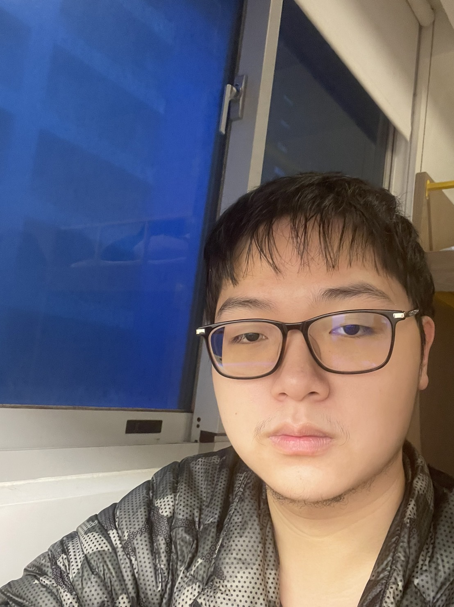

これは私
姓名 : 楊文森
星座 : 天蠍座
就讀學校 : 中原大學
興趣 : 小說、遊戲、羽毛球
一個輕鬆的人，自自然然的過每一天
一個感性的人，會因難過而流淚，會因不公而氣憤
優點 : 團隊合作能力強、好勝、自律、不服輸、熱愛學習
缺點 : 專業知識不足、邏輯思考速度慢、缺乏美術天賦
姓名 : 楊文森
星座 : 天蠍座
就讀學校 : 中原大學
興趣 : 小說、遊戲、羽毛球
一個輕鬆的人，自自然然的過每一天
一個感性的人，會因難過而流淚，會因不公而氣憤
優點 : 團隊合作能力強、好勝、自律、不服輸、熱愛學習
缺點 : 專業知識不足、邏輯思考速度慢、缺乏美術天賦
.jpg)
校外社團成果發表會
生物研究社，一個研究生物的構造、習性、分布的社團，
從動物到植物，藍鯨到病毒，所有生命都在我們的探討範圍，
此次的成果發表在校外舉辦，由各組字字選擇主題，製作海報，
並在當天發表，發表會以類似園遊會擺攤的方式，會場中有各式各樣的主題，
每一個主題都有不同的生物學知識，供客人選擇想要學習的知識，
我們則負責講解各自負責的攤位，並在講解無之後詢問滿意度，
"生意"最好的攤位則會獲得小禮物，我們甚至還有個比賽，相當令我印象深刻。

大一企業概論慈善義賣
大一的企業概論，教授準備了一個持續整學期的專題
我們經由分組後組成模擬公司，然後與與慈善機構合作，販售慈善商品
藉由組內分工，自行處理進貨、與供貨商商討價格、宣發、網頁製作、販售盪售後服務，
還有記帳跟財務報告、會計資料等等，讓我們實際體驗一家銷售公司的執行過程
跟組員之間的溝通與協調。
大一管理學-服務學習
木匠的家
一開始是由一群中壢地區教會的會友何中原大學的教職員共同發起的
營造青少年一個正當的休閒空間，並提供免費咖啡和英語自由雜談
隨著接觸的人越來越多，他們注意到了【弱勢族群】的需求
為了協助弱勢族群身存，成立的二手公益店，二手家具部與維修站
我們去服務的時間處於疫情的高峰期，由於疫情影響，店內生意慘淡
但他們還是咬牙苦撐。我們給予了力所能及的幫助，協助處理捐贈過來的二手衣物
將衣物裁減、拆解成布片，以提供他們縫製二手商品。
高雄西子灣淨灘活動
海洋被普遍認為是生命的起源，一旦海洋出了問題，將會對生態造成不小衝擊
因緣際會我參加了這個活動，以一整個班級為單位，每個班級負責一塊區域
將沙灘上的寶特瓶、鋁箔包、玻璃罐等可回收垃圾分類
將衛生紙、塑膠袋等不可回收垃圾清理乾淨，在這期間我們還有看到一些潮間帶的生物生存在垃圾之間
不得不說那些畫面令我們震憾，經由工作人員解釋，我們得知這種狀況在開始舉辦定期的淨灘活動之後，就很少出現
我們算是找到了漏網之魚。